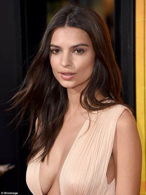
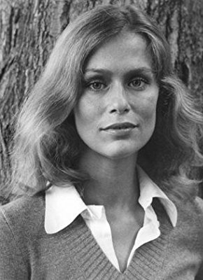
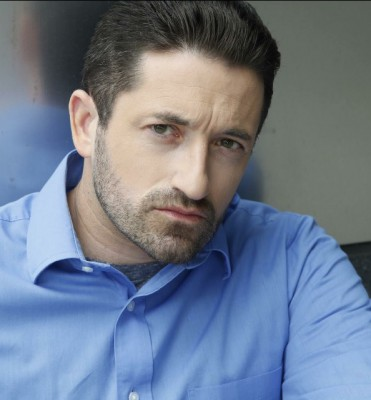

#9253 I Feel Pretty

 IMDB-Wertung: 5.3 / 10
IMDB-Wertung: 5.3 / 10  Tomatometer: 35
Tomatometer: 35  Metascore: 47
Metascore: 47 
Renee (Amy Schumer) weiß sehr wohl wie es ist, gerade so knapper Durchschnitt in der Welt der Schönen zu sein. Doch ihr Selbstbild ändert sich buchstäblich schlagartig mit einem ungebremsten Sturz vom Fitnessrad: plötzlich sieht sie sich wunderschön, auch wenn ihre Umgebung das nicht genauso erkennt und der Kopf dazu noch ganz schön brummt. Mit ganz neuem Selbstvertrauen klettert sie unerwartet auf der Karriereleiter einer Kosmetikfirma nach oben und gewinnt endlich den Respekt der von ihr so bewunderten Chefin Avery LeClaire (Michelle Williams). Doch was passiert, wenn sich die anfängliche Wirkung verflüchtigt und die Realität wieder einsetzt?
Jahr: 2018
Dauer: 110 Minuten
FSK: 0
Land: China Studio: Concorde FilmverleihTonspuren: DTS - ,
Untertitel: Deutsch,
Auflösung: 1080p (1920x808) Größe: 4638 MB
Genre: Komödie
Regisseur: Abby Kohn, Marc Silverstein
Drehbuch: Abby Kohn
Soundtrack: Michael Andrews
Darsteller:
- Amy Schumer als Renee Bennett
 Michelle Williams als Avery LeClaire
Michelle Williams als Avery LeClaire- Tom Hopper als Grant Leclair
- Rory Scovel als Ethan
 Adrian Martinez als Mason
Adrian Martinez als Mason-  Emily Ratajkowski als Mallory
- Aidy Bryant als Vivian
 Busy Philipps als Jane
Busy Philipps als Jane-  Lauren Hutton als Lilly Leclair
- Sasheer Zamata als Tasha
- Caroline Day als Jenn
- Anastagia Pierre als Claire
- Gia Crovatin als Sasha
- Olivia Culpo als Hope
- Naomi Campbell als Helen
- Kyle Grooms als Lyle
- Paul McCallion als Grouper Date #2
 Dave Attell als Really Tan Dude
Dave Attell als Really Tan Dude- Nikki Glaser als Woman at LL HQ
- Dakota Lustick als Skinny Barista
- William Ambrose Kennedy als Silver Fox's Husband
- Sarah Fischer als Salesgirl
- Rachel Feinstein als Soulcycle Woman
- Kevin Kane als Cute Guy at Pharmacy
- Chloe Hurst als Greta
- Monib Abhat als Beefy Dude
 Ralph Ayala als Bar Patron (uncredited)
Ralph Ayala als Bar Patron (uncredited)- Caitlin Batts als Beach Kid (uncredited)
- Tina Bell als Publicist / Restaurant Patron (uncredited)
- Timothy Brierley als Boston Gate Attendant (uncredited)
- Kayla Caulfield als Launch Party Guest (uncredited)
-  Shawn Contois als #3 Airport Maintenance Worker (uncredited)
- Ashley Couture als Soul Cycler (uncredited)
- Lee DiFilippo als Chauffeur / Launch Party Guest (uncredited)
- Jessica Doane als Bar Patron (uncredited)
- Stephan F Feeley als Event Guest (uncredited)
- Ed Goode als Airport Traveler (uncredited)
- Jared M. Gordon als Bar Patron (uncredited)
- Kirsten Grimes als Luxury Car Driver (uncredited)
- Alin Halajian als Launch Party Guest (uncredited)
- Johnny L. Hernandez als Party Goer (uncredited)
 Arthur Hiou als Chinatown Resident (uncredited)
Arthur Hiou als Chinatown Resident (uncredited)- Jacqueline Honulik als Attractive Red Head (uncredited)
- Ken Kansky als Background Pedestrian (uncredited)
- Mark Lund als Restaurant Patron (uncredited)
- Danielle Lyons als Fashion Designer / Party Goer (uncredited)
- Rob Lévesque als Rubirosa Patron (uncredited)
- Jimmy Malcolm als Bar Patron (uncredited)
- Robert Marsella als Restaurant Patron (uncredited)
- Marcus McDermott als Lily LeClair Employee (uncredited)
Datei: X:\2018(G-M)\I Feel Pretty (2018, FSK0, 1920x808).mkv seit 20.07.2018
Festplatte: HD 2018(G-Z)-2019(A-Z)
 Es gibt insgesamt 138 Filme in der Gruppe '2018(G-M)'
Es gibt insgesamt 138 Filme in der Gruppe '2018(G-M)'